アカウント作成から本文エディタの使い方、チームでの運用、サーバー管理者向けの管理者パネル、デスクトップ版の使い方までをまとめています。
チームのナレッジを1画面で作成・検索・整理できるセルフホスト型のナレッジ管理ツールです。
記事の作成・閲覧・整理をひとつの画面で行える master-detail 型のUIが特長です。図解・テーブル・注意書き・画像・動画を組み合わせたリッチな記事を作成でき、チームでの権限管理や複数の保存先（ローカル／AWS S3／Google ドライブ／SharePoint Online／Box）にも対応しています。
Web版（サーバーとして常時稼働、チームで共有）とデスクトップ版（インストール不要、ログイン不要でローカル動作）の2つの形態で利用できます。
Web版（サーバー版）を利用するには、まずアカウントを作成します。
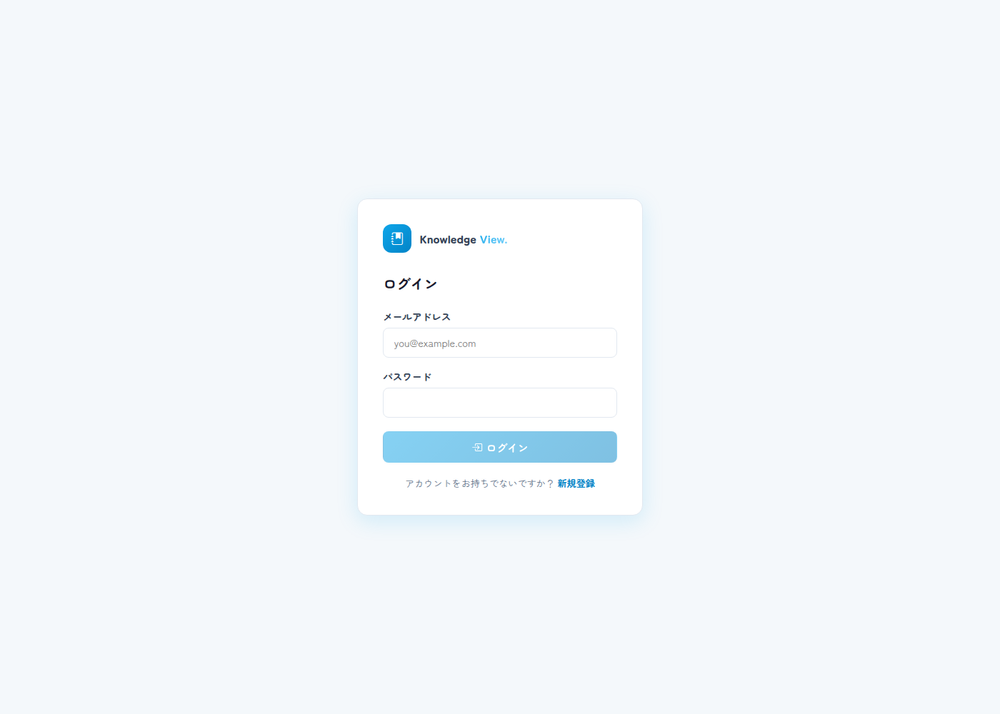
表示名・メールアドレス・パスワード（6文字以上）を入力してアカウントを作成すると、そのままログインした状態になります。次回以降はこの画面でメールアドレスとパスワードを入力してログインします。
「プロジェクト」はチームや目的ごとのワークスペースです。記事・フォルダ・タグはプロジェクトごとに完全に分離されます。
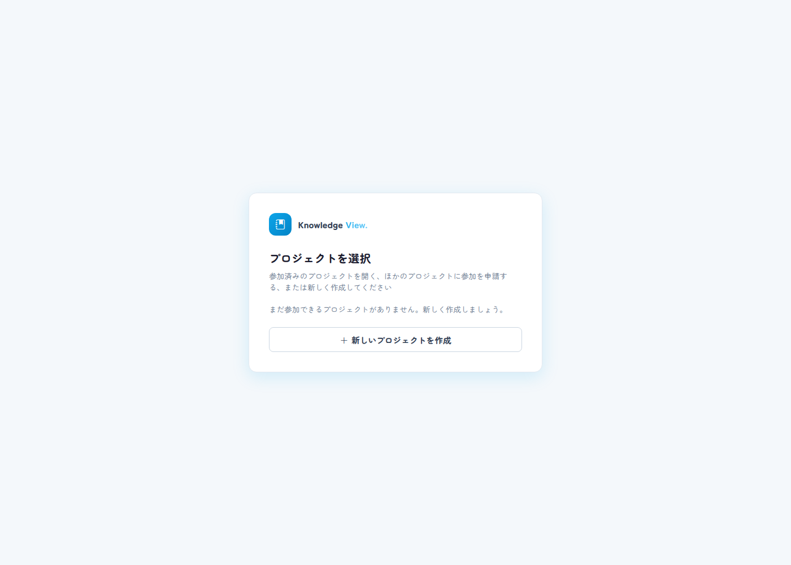
「新しいプロジェクトを作成」からプロジェクト名を入力し、保存先を選んで接続テストに成功すると作成できます。作成した人が最初の「オーナー」になります。
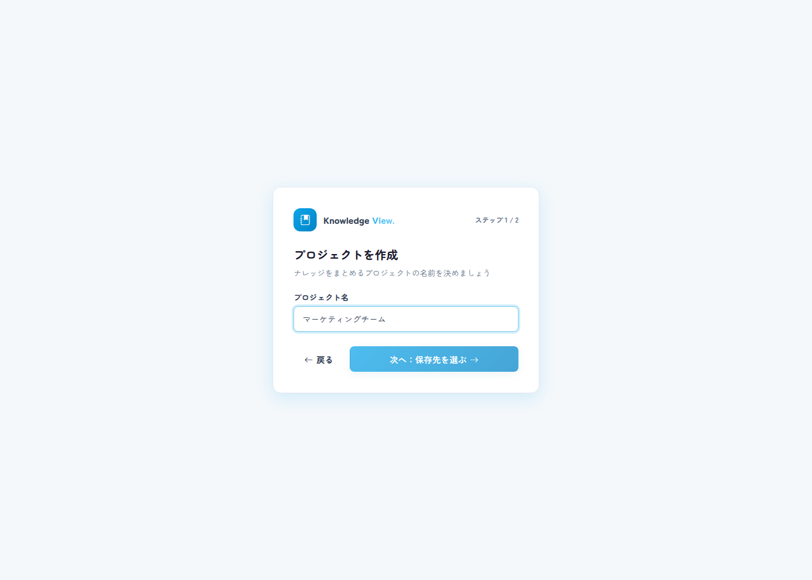
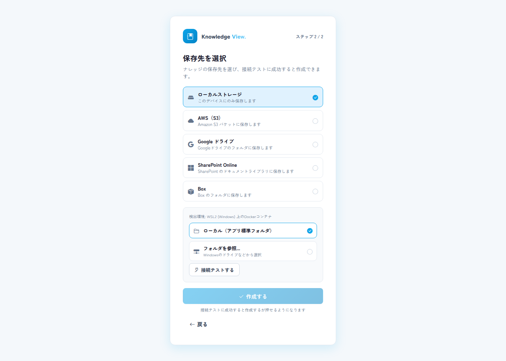
同じサーバー上の他のプロジェクトが「参加をリクエストできるプロジェクト」欄に表示されます。「参加を申請」を押すと、そのプロジェクトのオーナーの承認待ち状態になります。承認されると利用できるようになります。オーナーから招待URLを受け取った場合は、そのURLを開いて参加申請することもできます（詳しくは「メンバーと権限の管理」）。
左下の「＋」ボタンから新しい記事を作成できます（作成・編集はオーナーのみ）。
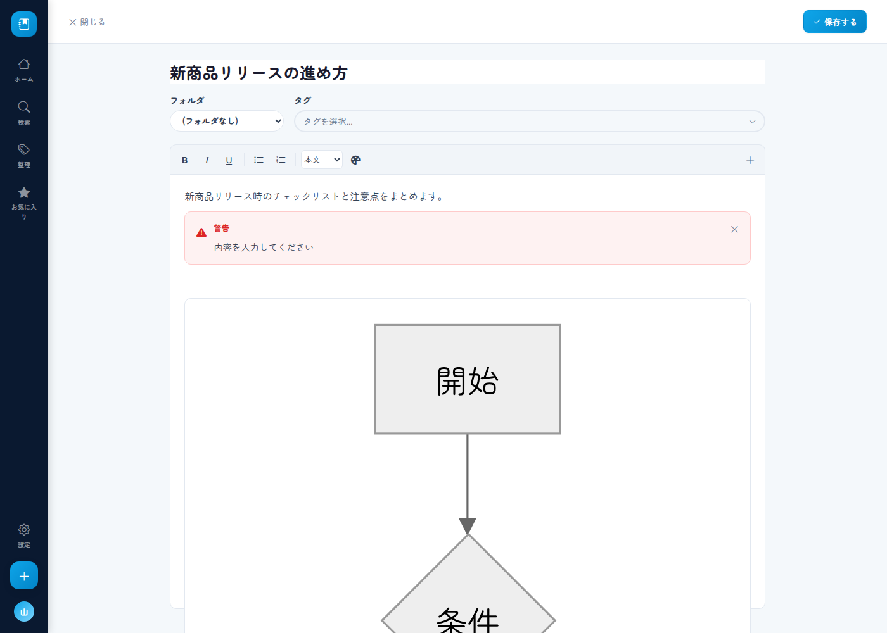
ツールバー右端の「＋」（挿入）ボタンを押すと、カーソル位置に挿入できる要素の一覧が表示されます。カテゴリごとに整理されており、検索も可能です。
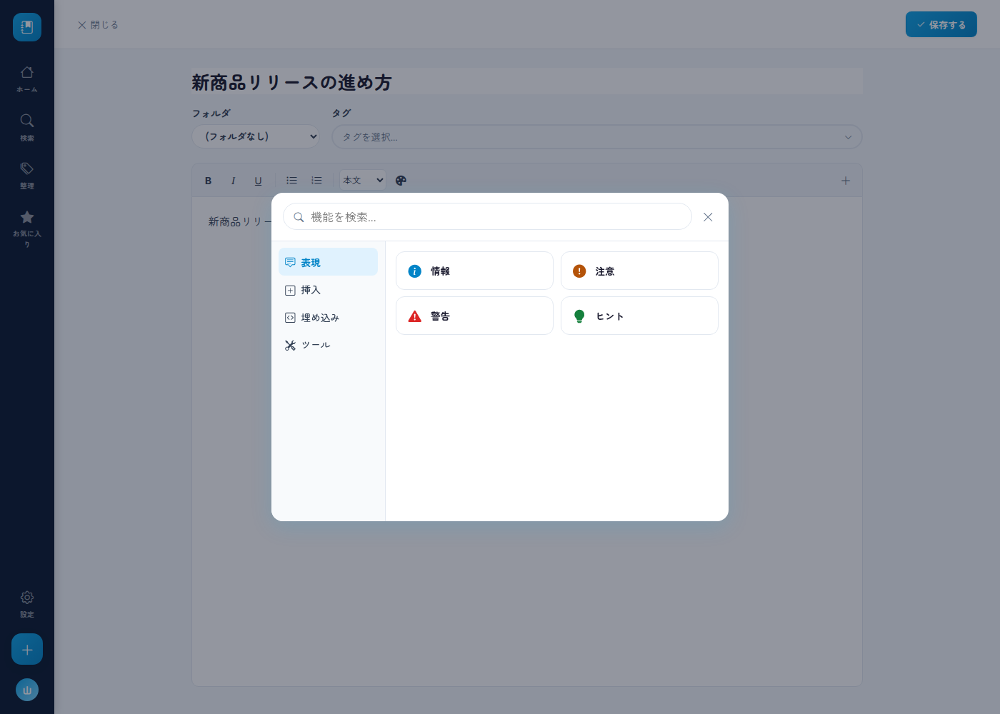
「挿入」カテゴリから図の種類（フローチャート／シーケンス図／状態遷移図／ER図／ガントチャートなど）を選ぶと、テンプレート付きの作成画面が開きます。プレビュー上のラベルを直接クリックして文字を編集することも、Mermaid記法のコードを直接編集することもできます。どちらで編集しても、もう一方に即座に反映されます。
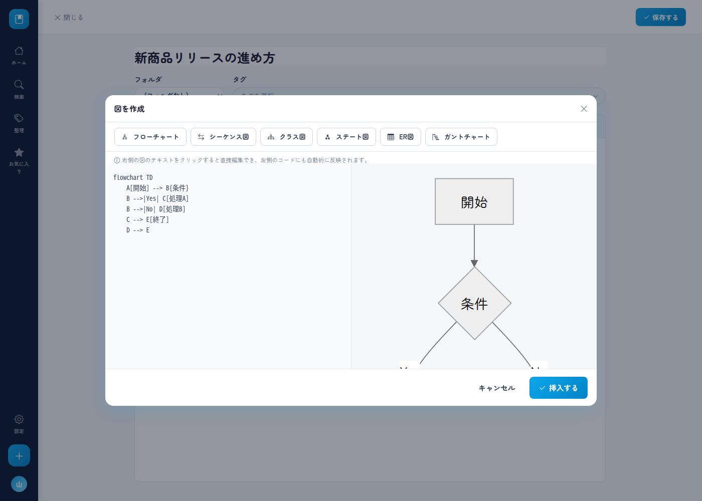
右上の「保存する」を押すと記事一覧に反映され、閲覧画面に切り替わります。編集用のコントロール（削除ボタンなど）は、閲覧画面では自動的に非表示になります。
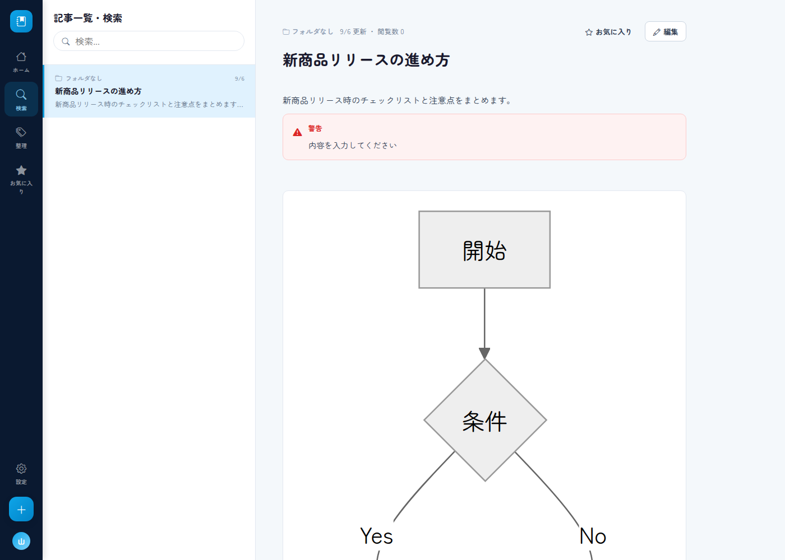
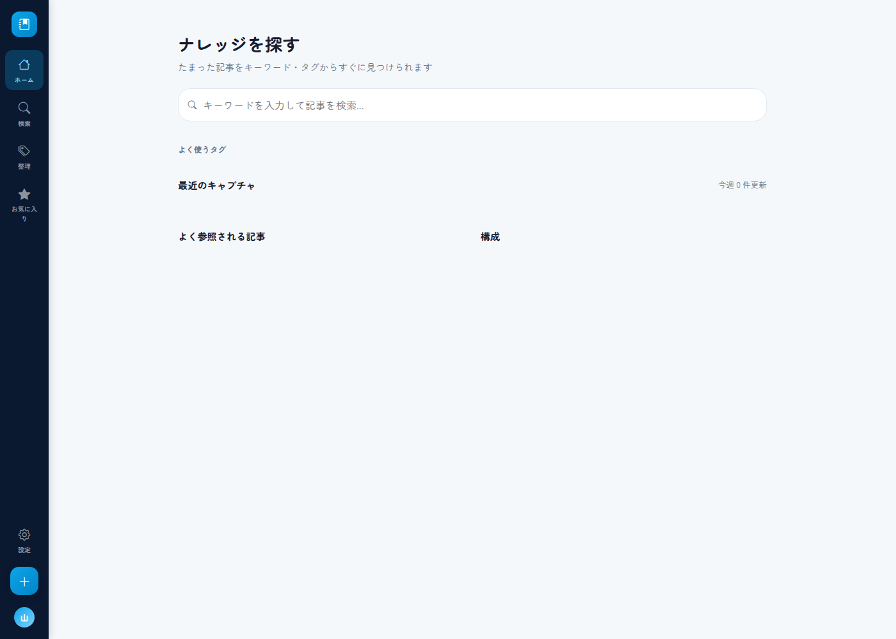
ホーム画面のキーワード検索は、画面を移動せずその場で結果が絞り込まれます。よく使うタグや最近更新された記事もここから確認できます。
左のナビゲーションの「整理」から、フォルダとタグの一覧・追加ができます（追加はオーナーのみ）。記事一覧画面ではフォルダやタグをクリックして絞り込み表示できます。
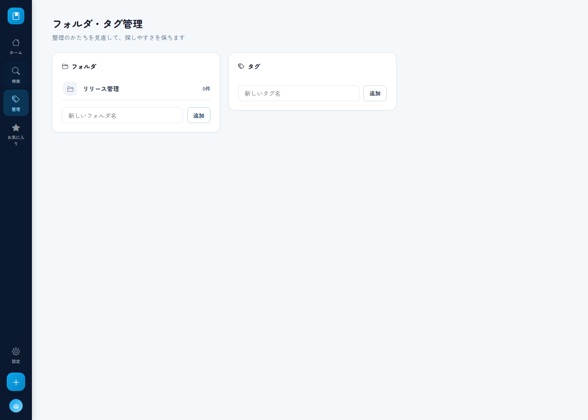
記事の閲覧画面から「お気に入り」に登録できます（メンバーも操作可能）。左のナビゲーションの「お気に入り」からまとめて確認できます。
プロジェクトへのアクセスは承認制です。オーナーがメンバーの参加を承認・却下・削除でき、複数人でオーナーを兼任することもできます。
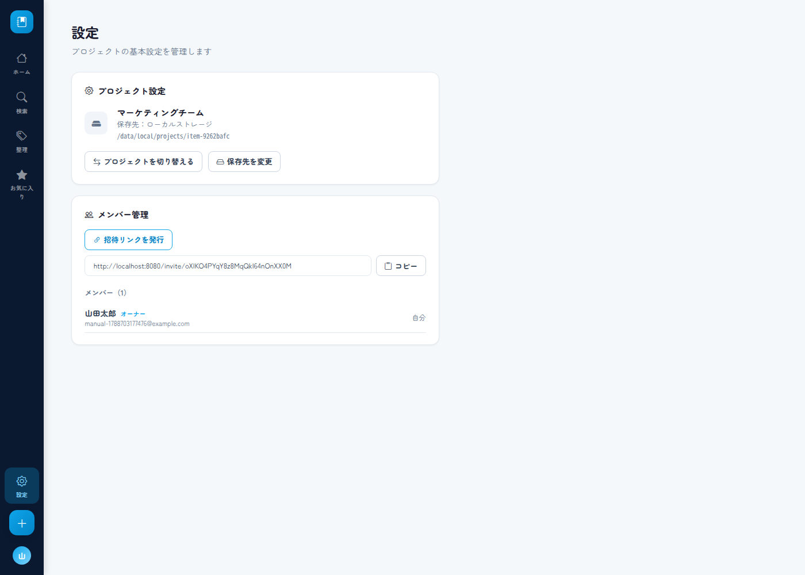
| できること | オーナー | メンバー |
|---|---|---|
| 記事の閲覧・お気に入り登録・コメント | ○ | ○ |
| 記事の作成・編集・削除 | ○ | − |
| フォルダ・タグの追加 | ○ | − |
| 招待の発行、参加申請の承認・却下 | ○ | − |
| 他のメンバーをオーナーに昇格／降格 | ○ | − |
| 保存先の変更 | ○ | − |
オーナーは他の承認済みメンバーを「オーナーにする」ボタンで昇格でき、複数人で対等にプロジェクトを共同管理できます。ただし、最後の1人のオーナーを降格・削除することはできません（プロジェクトの管理者が誰もいなくなるのを防ぐためです）。
プロジェクトの保存先は「設定」画面の「保存先を変更」から変更できます（オーナーのみ）。ローカルストレージのほか、以下の外部ストレージに対応しています。いずれも接続テストに成功しないと保存できません。
サーバー版には、すべてのプロジェクトを横断的に管理できる管理者アカウントがあります。デスクトップ版にはこの機能はありません。
サーバーを起動すると、初期設定トークンが自動生成されサーバーの起動ログに出力されます（docker compose logs backend で確認できます。ユーザーが何かを事前に設定する必要はありません）。/admin を開き、そのトークンを入力した上でユーザー名・パスワードを決めてください。一度設定すると、以降は誰でも初期設定画面には戻れず、通常のログイン画面になります。
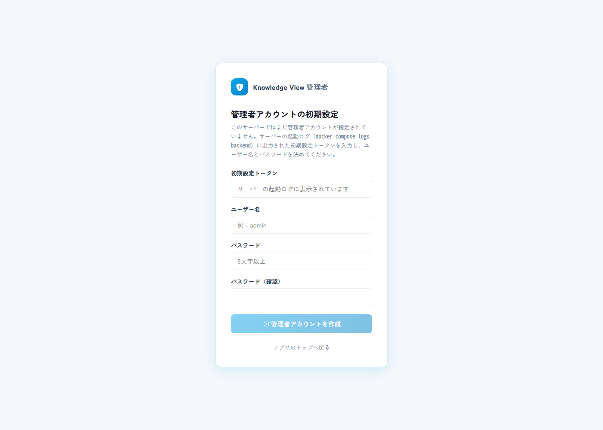
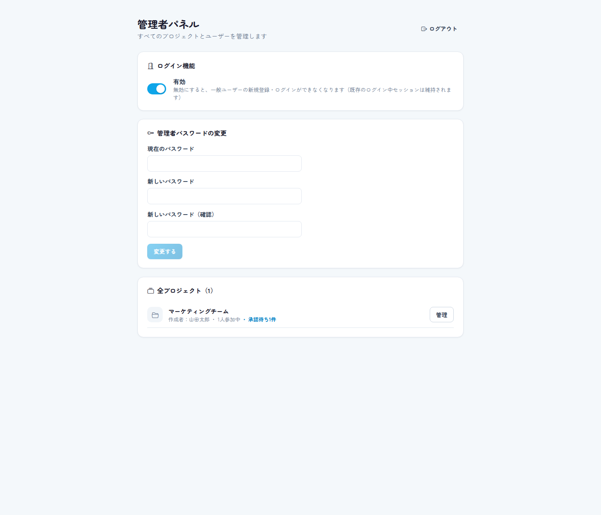
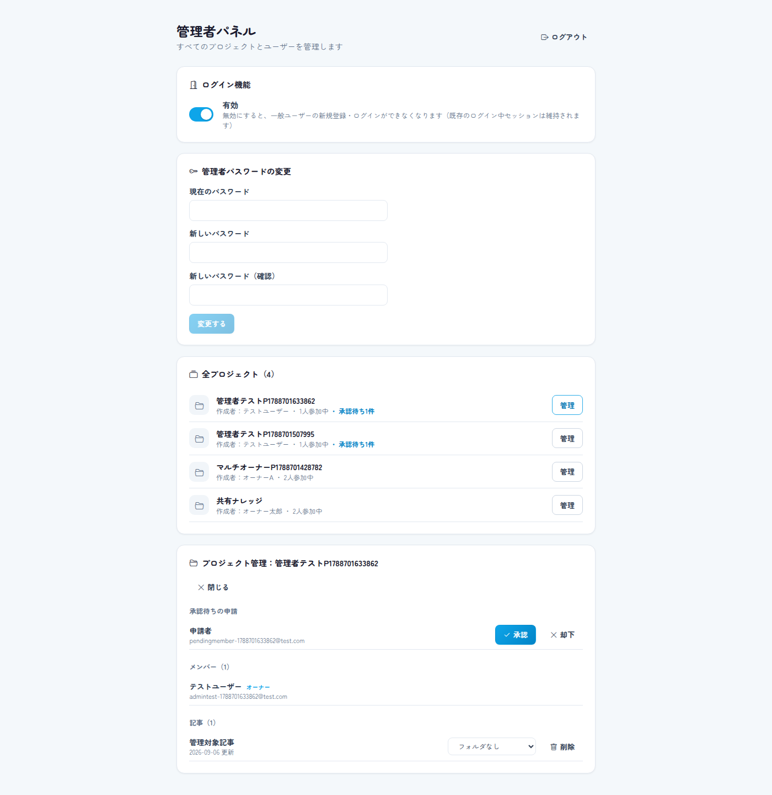
Windows / Mac / Linux 向けのネイティブアプリです。インストール後はログイン不要で、単体のローカルアプリとしてすぐに使い始められます。ダウンロードはトップページから。
基本的な使い方（記事の作成・編集・検索・整理）はWeb版と同じです。ただしデスクトップ版は1人のローカルユーザーとして動作するため、チームでの招待・承認やメンバー管理の機能は表示されません。
チームで運用しているKnowledge Viewサーバーがある場合、設定画面の「サーバーとの連携」から接続できます。接続してもローカルのデータは消えず、ローカルとサーバー、両方のデータを切り替えて使えます。
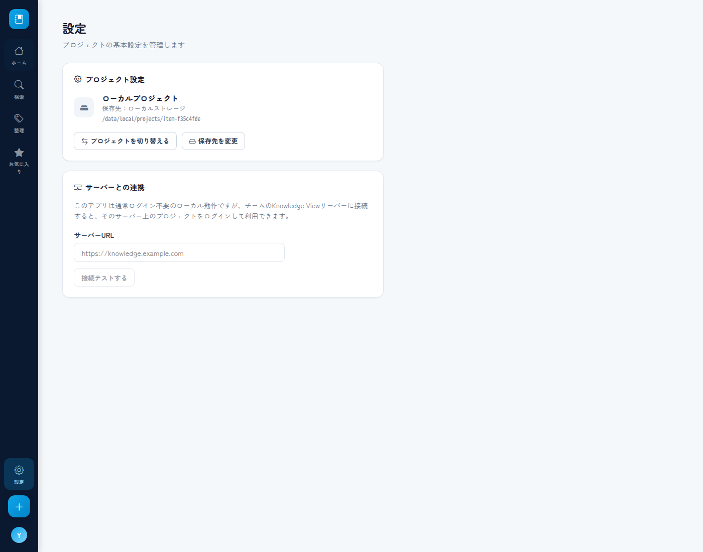
ログインすると「記事」画面のフォルダツリー上部に「ローカル」「サーバー」タブが表示され、いつでも行き来できます。設定画面の「連携を解除する」を押すと、サーバーとの連携自体を解除できます。
フォルダ・タグ・記事をJSON形式でエクスポート・インポートできます。バックアップのほか、AIツールへ読み込ませる用途にもご利用いただけます（サーバー版・デスクトップ版共通）。
エクスポートしたJSONには、本文のHTMLに加えてプレーンテキスト版（bodyText）も含まれており、AIツールに読み込ませる際にそのまま使いやすくなっています。
「設定」画面の「データのエクスポート・インポート」から、プロジェクト全体・記事1件単位のどちらのJSONファイルもインポートできます（プロジェクトのオーナーのみ）。
外部プログラムから記事・フォルダを取得・追加・削除できるAPIです（サーバー版・デスクトップ版共通）。AIエージェントからの読み書きや、他システムとの連携にご利用いただけます。
「設定」画面の「外部APIキー」から発行できます（プロジェクトのオーナーのみ）。発行直後の1回だけキーの全文が表示されるので、必ずその場でコピーして安全な場所に保管してください。不要になったキーはいつでも失効できます。
リクエストヘッダーに X-API-Key を付けてアクセスします。
curl -H "X-API-Key: kv_live_xxxxxxxx" https://your-server/api/v1/articles
curl -X POST -H "X-API-Key: kv_live_xxxxxxxx" -H "Content-Type: application/json" \
https://your-server/api/v1/articles \
-d '{"title": "タイトル", "folder": null, "tags": ["タグ1"], "bodyHtml": "<p>本文</p>"}'
デスクトップ版の場合は、設定画面の「サーバーとの連携」や「外部APIキー」に表示されているアドレス（例: http://127.0.0.1:8765/api）を使ってください。
| メソッド | パス | 内容 |
|---|---|---|
| GET | /api/v1/articles | 記事一覧を取得 |
| GET | /api/v1/articles/{id} | 記事を1件取得 |
| POST | /api/v1/articles | 記事を作成 |
| PUT | /api/v1/articles/{id} | 記事を更新 |
| DELETE | /api/v1/articles/{id} | 記事を削除 |
| GET | /api/v1/folders | フォルダ一覧を取得 |
| POST | /api/v1/folders | フォルダを作成 |
| DELETE | /api/v1/folders/{id} | フォルダを削除 |
| GET | /api/v1/tags | タグ一覧を取得 |
チームで共有して使うなら常時稼働するWeb版（サーバー版）、個人で気軽に使いたい・インストールだけで完結させたいならデスクトップ版がおすすめです。デスクトップ版から必要な時だけチームのサーバーに接続することもできます。
「記事」画面で記事を開き、右上の「削除」ボタンから削除できます（プロジェクトのオーナーのみ）。フォルダツリー上の記事を右クリックして「削除」を選ぶ方法でも削除できます。管理者パネル（サーバー版）からも、全プロジェクト横断で記事を削除できます。
ログイン画面の「パスワードを忘れた場合」からメールアドレスを送信すると、サーバー版の管理者に通知されます。管理者が仮パスワードを発行するので、それでログインすると新しいパスワードの設定を求められます。ユーザー名（メールアドレス）自体を忘れた場合は「ユーザー名を忘れた場合」から、わかる範囲の情報（お名前など）を管理者に伝えてください。
プロジェクトごとに選んだ保存先（ローカルまたは外部ストレージ）に保存されます。「設定」画面で現在の保存先の実際のパスを確認できます。
Knowledge ViewはMITライセンスのもとで公開しているフリーソフトウェアです。無償でご利用いただけるほか、ソースコードの閲覧・改変・再配布も自由に行っていただけます。
本ツールは個人が趣味の範囲で開発・保守している非商用のプロジェクトです。商用のサポートや動作の継続的な保証をお約束するものではなく、本ソフトウェアの利用によって生じたいかなる損害についても作者は責任を負いかねます。あらかじめご了承のうえ、自己責任でご利用ください。